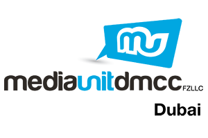
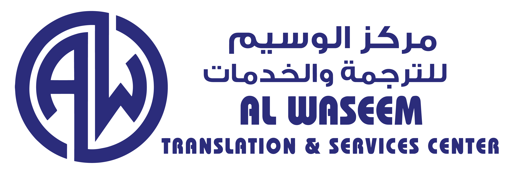
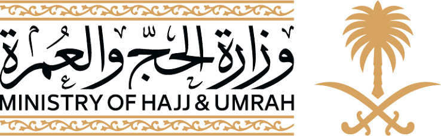
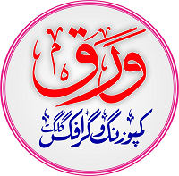

Translation & Localization
Accurate translation and cultural adaptation across Arabic, Urdu, Persian and English, with terminology and context under control.
Discuss a project ↗TRANSLATOR · INTERPRETER · LOCALIZATION EXPERT
I help organizations communicate across languages, markets and cultures with precision, context and human judgment.

01 / ABOUT
My work sits where language, technology and culture meet. For more than twelve years, I have worked across government, SaaS, Islamic institutions, gaming and multilingual content.
I specialize in Arabic–Urdu–Persian–English communication, localization, MTPE, linguistic QA and interpretation, while also working to preserve languages that technology too often overlooks.
That mission led to my work with FiKR&CD, focused on research, documentation and digital preservation of Indus-Kohistani and other endangered linguistic heritage.
Professional profile ↗02 / SERVICES
Accurate translation and cultural adaptation across Arabic, Urdu, Persian and English, with terminology and context under control.
Discuss a project ↗Human post-editing, linguistic testing, terminology review and production-quality assurance for machine-assisted workflows.
Discuss a project ↗Context-aware multilingual interpretation for meetings, institutions and sensitive communication environments.
Discuss a project ↗Player-facing strings, UI language, cultural adaptation, terminology and linguistic testing for interactive products.
Discuss a project ↗Transcription, language documentation, dataset preparation and community-centered digital preservation.
Discuss a project ↗Multilingual subtitles, transcription and culturally precise digital content for public and private platforms.
Discuss a project ↗03 / LANGUAGES
It is knowing what they mean to the people who use them.
| Language | Native name | Proficiency |
|---|---|---|
| Arabic | العربية | Native |
| Urdu | اردو | Native / Expert |
| Indus-Kohistani | انڈس کوہستانی | Native fluency |
| English | English | Fluent |
| Persian | فارسی | Advanced |
| Shina | شینا | Advanced |
| Pashto | پښتو | Professional |
04 / SELECTED WORK

Media Unit DMCCMedia · UAE / Lebanon
Al WaseemTranslation · Qatar / USA
Hajj & UmrahSaudi Arabia
Waraq EnterprisesGilgit · Your company CloudTransLocalization · Language Tech
CloudTransLocalization · Language Tech
 FiKR&CDResearch · Heritage
FiKR&CDResearch · Heritage
TRANSLATION · BUSINESS · LANGUAGE SERVICES
Founder and CEO of a language-services and professional enterprise, delivering translation, interpretation, localization and multilingual content work for clients across languages and sectors.
LOCALIZATION · LANGUAGE TECHNOLOGY
Founder of a translation and localization initiative focused on multilingual communication, localization workflows and technology-enabled language services.
MEDIA · TRANSLATION · COMMUNICATION
Professional language and media work involving multilingual content, communication and translation in an institutional environment.
TRANSLATION · LOCALIZATION
Professional translation and localization work with a Qatar-based language-services organization operating internationally, including the USA.
GOVERNMENT · ISLAMIC SERVICES
Large-scale English/Arabic → Urdu/Persian translation and localization work across approximately 500,000 words.
TOURISM · TRANSLATION
Translation and language-support work connected with Saudi tourism communication and multilingual content.
LANGUAGE DATA · USA
Verified more than 1,500 Shina-language YouTube videos for language-data and speech-technology work.
EDUCATION · LANGUAGE PRESERVATION
Contributed to language-preservation and educational work supporting an endangered language community under FLI Pakistan.
RESEARCH · CULTURAL TECHNOLOGY
Co-founder and project manager of a research and culture-development initiative focused on documentation, preservation and digital access for Indus-Kohistani and other endangered linguistic heritage.
GAMING · LOCALIZATION
Localization work involving player-facing language, terminology, culturally appropriate adaptation and linguistic quality for game content.
LANGUAGE DATA · AI-ASSISTED LOCALIZATION
Arabic (UAE) language work involving large-scale multilingual email content and AI-assisted language workflows.
LANGUAGE × TECHNOLOGY × HERITAGE
05 / CONTACT
Send the language pair, scope, deadline and context. Direct communication is available through email, WhatsApp or your preferred professional platform.
xl8.saif@gmail.com ↗